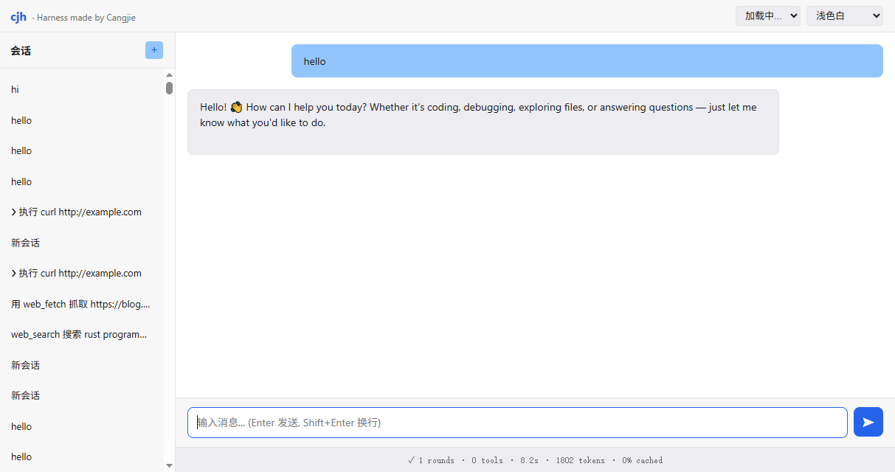

▣
一个文件 = 一个 agent
仓颉 cjnative 静态编译：Linux 17.1 MB、Windows exe 14.1 MB，没有 Node / Python 运行时依赖。下载、chmod、运行，三步到位。
Cangjie · Coding Agent Harness
说一句话，Agent 自己规划、调工具、读结果、迭代到完成；全过程在 TUI 里实时可见，也能用内置 Web 界面远程驱动。单二进制零依赖 —— 一个文件就是一个 agent。
# 无需 API Key：Mock 模式跑通全链路
$ curl -LO https://atomgit.com/qq8864/cjh/releases/download/v1.5.1/cjh-v1.5.1-linux-x64
$ chmod +x cjh-v1.5.1-linux-x64
$ CJH_MOCK=1 ./cjh-v1.5.1-linux-x64
# 接真模型（任选一个 Provider 的 Key）
$ export DEEPSEEK_API_KEY=sk-xxx
$ ./cjh-v1.5.1-linux-x64不堆功能。只盯两条硬指标 —— 省 token、跑得快 —— 再把它装进一个不用安装的二进制里。
仓颉 cjnative 静态编译：Linux 17.1 MB、Windows exe 14.1 MB，没有 Node / Python 运行时依赖。下载、chmod、运行，三步到位。
超阈值工具结果保留头尾、中间完整落盘 ~/.cjh/spill/，省略标记带路径，模型需要时用 read_file 读回 —— 既省 token 又不丢信息。
从工具调用提取资源访问 (path, isWrite) 构建依赖图，拓扑分组，同组 spawn 并发、组间串行；parallelSavedMs 实时量化省下的时间。
自实现 termios + ANSI 差分刷新（纯 libc FFI，不依赖第三方库）：Markdown 渲染、/ 命令补全、10 套主题、危险操作审批弹窗。
内置 HTTP Server + WebSocket 流式对话 + REST API + 前端 SPA，浏览器里远程驱动同一个 Agent，token 鉴权与启动安全审计默认开启。
技能即 Markdown，插件可携带工具；SHA256 校验和 + SM2 国密签名（仓颉 stdx.crypto 原生），从语言层到供应链层双保险。
终端里的全屏 TUI，和浏览器里的实时流。



先不花钱跑起来：Mock 模式不联网、不用 API Key，全链路照样走一遍。
curl -LO https://atomgit.com/qq8864/cjh/releases/download/v1.5.1/cjh-v1.5.1-linux-x64
chmod +x cjh-v1.5.1-linux-x64
CJH_MOCK=1 ./cjh-v1.5.1-linux-x64export DEEPSEEK_API_KEY=sk-xxx # 或 OPENAI_API_KEY / DASHSCOPE_API_KEY / CJH_API_KEY
./cjh-v1.5.1-linux-x64 # 默认 TUI；--cli 纯文本；--mode json 无头
./cjh-v1.5.1-linux-x64 web --port 8765 --token my-secret # Web 远程界面# 下载 cjh-v1.5.1-windows-x64-selfcontained.zip 后解压
# exe 与 4 个 DLL 必须放在同一目录
cjh-v1.5.1-windows-x64.exe想从源码构建？README 快速开始：仓颉 SDK 1.0.5+，cjpm build 静态单文件，./scripts/test.sh 跑全量单测。
Linux 与 Windows 预编译包，直接取用。全部发布记录 →
源码与文档同仓，关键设计都写清了「为什么」。